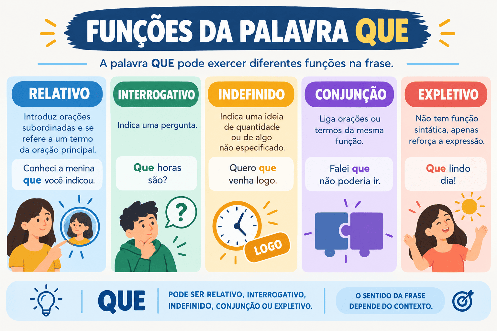

Funções da Palavra "QUE": Sintaxe, Usos e Classificações
A palavra “que” é uma das unidades linguísticas mais dinâmicas e recorrentes da Língua Portuguesa. Em virtude de sua natureza polissêmica e multifuncional, ela transita com facilidade por quase todas as classes de palavras da morfologia, desempenhando papéis que vão desde pronome relativo e conjunção integrante até advérbio de intensidade, substantivo e partícula de realce.
Nos vestibulares, no ENEM e em concursos públicos, as questões que exploram a palavra “que” avaliam a capacidade do candidato de analisar a estrutura sintática do período, identificar a hierarquia das orações e reconhecer relações de sentido sutis. Além disso, o emprego consciente desse vocábulo na produção escrita é essencial para evitar o vício do "queísmo" (repetição excessiva da palavra) e garantir coesão e elegância ao texto.
Neste guia completo do Mestre Kira, você aprenderá a reconhecer todas as classificações morfológicas e funções sintáticas da palavra “que”, compreenderá os testes práticos de substituição (como os testes do “o qual” e do “isso”), analisará tabelas comparativas e praticará com um quiz de 10 questões com gabarito comentado.

Visão geral das funções da palavra "QUE"
Dada a amplitude de usos do vocábulo, a tradição gramatical organiza as ocorrências da palavra “que” em três grandes domínios funcionais:
- Funções Conectivas: quando atua ligando orações como conjunção subordinativa (integrante, consecutiva, causal, comparativa, final) ou conjunção coordenativa (explicativa, aditiva, adversativa);
- Funções Pronominais: quando atua substituindo ou determinando nomes, como pronome relativo, pronome interrogativo ou pronome indefinido;
- Outras Classes e Funções Especiais: quando funciona como substantivo, advérbio de intensidade, preposição acidental, interjeição ou partícula expletiva (de realce).
Para determinar com segurança o papel da palavra “que”, o estudante deve observar dois fatores fundamentais: se a palavra retoma um termo antecedente (natureza pronominal) ou se apenas introduz e conecta uma oração a outra (natureza conjuntiva).
1. Pronome Relativo
A função de pronome relativo é uma das mais importantes e cobradas da palavra “que”. Nessa função, o “que” introduz uma oração subordinada adjetiva (restritiva ou explicativa) e desempenha um papel duplo:
- Papel coesivo: retoma um termo substantivo ou pronominal antecedente, evitando sua repetição;
- Papel sintático: exerce, dentro da oração que introduz, a função sintática que o termo antecedente exerceria (sujeito, objeto direto, objeto indireto, complemento nominal, etc.).
Teste prático infalível: O “que” será pronome relativo se puder ser substituído, sem alteração de sentido e com os devidos ajustes de gênero e número, por o qual, a qual, os quais, as quais.
Os livros que a professora recomendou estão esgotados na biblioteca.
- termo antecedente: os livros;
- teste de substituição: “Os livros os quais a professora recomendou...”;
- classificação da oração: oração subordinada adjetiva restritiva;
- função sintática do “que”: objeto direto (quem recomenda, recomenda algo: a professora recomendou os livros).
O candidato que estuda com disciplina conquista a aprovação.
- teste de substituição: “O candidato o qual estuda...”;
- função sintática do “que”: sujeito da oração subordinada (o candidato estuda).
2. Conjunção Integrante
O “que” classifica-se como conjunção subordinativa integrante quando introduz uma oração subordinada substantiva (subjetiva, objetiva direta, objetiva indireta, completiva nominal, predicativa ou apositiva).
Diferentemente do pronome relativo, a conjunção integrante não possui antecedente nem desempenha função sintática interna na oração: sua função é puramente conectiva, articulando a oração subordinada à oração principal.
Teste prático infalível: Substitua toda a oração iniciada pelo “que” pelo pronome demonstrativo “isso” (ou suas formas preposicionadas disso, nisso). Se o período mantiver sentido e correção gramatical, o “que” é uma conjunção integrante!
O professor afirmou que as notas seriam divulgadas hoje.
- teste prático: “O professor afirmou isso”;
- classificação: conjunção integrante;
- oração introduzida: oração subordinada substantiva objetiva direta.
É fundamental que todos compareçam à cerimônia.
- teste prático: “Isso é fundamental”;
- oração introduzida: oração subordinada substantiva subjetiva.
Pronome Relativo vs. Conjunção Integrante
Essa distinção é o confronto sintático mais recorrente em provas. O quadro comparativo abaixo sintetiza o contraste entre as duas funções:
| Critério | Pronome Relativo | Conjunção Integrante |
|---|---|---|
| Retoma antecedente? | Sim (substantivo ou pronome anterior) | Não (liga orações substantivas à principal) |
| Tipo de oração introduzida | Oração subordinada adjetiva | Oração subordinada substantiva |
| Exerce função sintática? | Sim (sujeito, objeto, etc.) | Não (atua apenas como conectivo) |
| Mecanismo de teste | Substitui-se por o qual / a qual | Substitui-se a oração por isso |
| Exemplo clássico | A notícia que li era verídica. (= a qual li) | Quero que você venha. (= Quero isso) |
Pronome Relativo
O tema que foi debatido gerou polêmica.
O “que” retoma o substantivo “tema” e equivale a “o qual foi debatido”. Introduz oração adjetiva.
Conjunção Integrante
Disseram que o tema gerou polêmica.
O “que” não retoma substantivo anterior. Equivale a “Disseram isso”. Introduz oração substantiva.
3. Conjunções Subordinativas Adverbiais
A palavra “que” pode introduzir diferentes tipos de orações subordinadas adverbiais, expressando circunstâncias de causa, consequência, finalidade, comparação ou concessão:
A. Conjunção Consecutiva
Expressa a consequência de um fato intensificado na oração principal. Aparece associada a termos intensificadores como tão, tanto, tamanho, tal.
Estudou tanto que adormeceu sobre os livros.
O “que” introduz uma oração subordinada adverbial consecutiva (a consequência de ter estudado tanto).
B. Conjunção Causal
Introduz uma circunstância de causa ou motivo, equivalendo a porque, já que ou visto que.
Apresse-se, que já estamos atrasados para o início da prova.
O “que” introduz a causa do pedido de pressa (equivale a “porque já estamos atrasados”).
C. Conjunção Comparativa
Estabelece uma relação de comparação, associando-se a advérbios comparativos como mais, menos, melhor, pior.
O candidato escreveu mais rápido do que o examinador previa.
A locução do que (ou simplesmente que) introduz oração subordinada adverbial comparativa.
D. Conjunção Final
Expressa a finalidade ou o objetivo de uma ação, equivalendo a para que ou a fim de que. O verbo seguinte costuma vir no modo subjuntivo.
O professor fez sinal que todos fizessem silêncio.
Equivale a “para que todos fizessem silêncio” (conjunção final).
E. Conjunção Concessiva
Introduz uma ideia de concessão ou ressalva, equivalendo a embora ou ainda que.
Cansado que estivesse, permaneceu concentrado na leitura.
Equivale a “Ainda que estivesse cansado” (conjunção concessiva).
4. Conjunções Coordenativas
Quando liga orações sintaticamente independentes, a palavra “que” pode exercer papel de conjunção coordenativa:
- Coordenativa Explicativa: justifica uma ordem, conselho ou afirmação anterior, surgindo habitualmente após verbo no imperativo (ex.: “Não saia agora, que está chovendo torrencialmente” → equivale a pois/porque);
- Coordenativa Aditiva: expressa acréscimo ou repetição enfática de uma ação, interligando verbos idênticos (ex.: “O estudante fala que fala sem parar” → equivale a e);
- Coordenativa Adversativa: estabelece uma relação de oposição ou contraste, equivalendo a mas ou porém (ex.: “Outro candidato, que não ele, assumiu a liderança do projeto”).
5. Pronome Interrogativo e Indefinido
A palavra “que” atua como pronome quando se relaciona diretamente a um substantivo ou o substitui em construções de questionamento ou indeterminação:
Pronome Interrogativo: empregado em frases interrogativas diretas ou indiretas.
- “Que aconteceu durante a reunião?” (pronome substantivo interrogativo);
- “Que medidas serão tomadas pela diretoria?” (pronome adjetivo interrogativo que acompanha o substantivo “medidas”).
Pronome Indefinido: ocorre comumente em frases exclamativas, acompanhando um substantivo e conferindo valor de intensidade ou indeterminação.
“Que entusiasmo demonstraram os participantes!” (acompanha o substantivo “entusiasmo”).
6. Advérbio de Intensidade
O “que” classifica-se como advérbio de intensidade quando modifica diretamente um adjetivo ou outro advérbio em construções exclamativas, equivalendo semanticamente a “quão” ou “muito”.
Que bela apresentação os alunos realizaram!
A palavra “que” intensifica o adjetivo “bela” (equivale a “Quão bela apresentação...”). É, portanto, advérbio de intensidade.
Que longe fica aquele colégio!
A palavra “que” intensifica o advérbio de lugar “longe” (equivale a “Quão longe...”).
7. Substantivo (o "Quê")
O “que” transforma-se em um substantivo (palavra substantivada) quando vem precedido de um elemento determinante (artigo, pronome ou numeral).
Nessa condição, ele passa a ser tônico, recebe acento circunflexo obrigatório (quê) e significa “alguma coisa”, “determinado aspecto” ou “mistério”.
Aquele discurso continha um quê de provocação irônica.
A palavra vem antecedida pelo artigo indefinido “um”, recebe acento circunflexo e significa “uma certa nuance” ou “um certo aspecto”.
8. Interjeição (o "Quê?!")
A palavra atua como interjeição quando exprime um sentimento súbito de espanto, surpresa, perplexidade ou indignação. É proferida com tom enfático, vem acompanhada de acento circunflexo (quê) e pontuada por sinal de exclamação ou interrogação.
Quê! Você não conferiu as respostas do simulado?
Exprime surpresa e admiração, constituindo uma interjeição autônoma.
9. Preposição Acidental
O “que” classifica-se como preposição acidental quando liga dois verbos em locuções verbais construídas com os verbos auxiliares ter ou haver, equivalendo exatamente à preposição de.
Temos que revisar toda a matéria antes do exame.
A palavra “que” liga a forma auxiliar “temos” ao infinitivo “revisar”, equivalendo a “Temos de revisar”.
10. Partícula Expletiva (ou de Realce)
O “que” funciona como partícula de realce quando não exerce nenhuma função sintática indispensável, servindo exclusivamente para enfatizar determinado elemento da oração. Pode ser suprimido da frase sem qualquer perda gramatical ou alteração estrutural.
Nós é que sabemos o valor de cada hora de dedicação aos estudos.
A locução expletiva “é que” pode ser eliminada sem prejuízo: “Nós sabemos o valor de cada hora de dedicação aos estudos”.
Quase que perdi o horário de fechamento dos portões.
Suprimindo o “que”: “Quase perdi o horário de fechamento dos portões” (sentido e gramática intactos).
Quadro Síntese: As Classificações da Palavra "QUE"
| Classificação | Classe Gramatical | Como Identificar / Teste Prático | Exemplo Canônico |
|---|---|---|---|
| Pronome Relativo | Pronome | Retoma antecedente → substitui-se por o qual / a qual | O livro que li é ótimo. |
| Conjunção Integrante | Conjunção | Inicia oração substantiva → substitui-se por isso | Desejo que vença. |
| Conjunção Consecutiva | Conjunção | Expressa consequência após tão, tanto, tal, tamanho | Gritou tanto que rouquejou. |
| Conjunção Causal/Explicativa | Conjunção | Indica causa ou justificativa → equivale a porque/pois | Venha, que é urgente. |
| Pronome Interrogativo | Pronome | Aparece em interrogações diretas ou indiretas | Que pretendem fazer? |
| Advérbio de Intensidade | Advérbio | Intensifica adjetivo ou advérbio → equivale a quão | Que bonita história! |
| Substantivo | Substantivo | Precedido de artigo/pronome → acentuado (quê) | Ele tem um quê especial. |
| Interjeição | Interjeição | Expressa espanto → acentuado e com exclamação (Quê!) | Quê! Perderam o prazo? |
| Preposição Acidental | Preposição | Liga ter/haver + infinitivo → equivale a de | Tenho que estudar. |
| Partícula de Realce | Palavra expletiva | Pode ser eliminada da oração sem prejuízo sintático | Você é que deve decidir. |
Passo a passo para classificar o "QUE" em provas
- Observe a acentuação e os determinantes: Se estiver acentuado com circunflexo (quê), ou é substantivo (precedido de artigo/pronome) ou interjeição (seguido de pontuação expressiva).
- Verifique se há locução verbal com ter/haver: Em estruturas como “ter que fazer”, atua como preposição acidental (equivale a de).
- Faça o teste da eliminação: Tente ler a frase sem o “que”. Se a estrutura sintática permanecer perfeitamente íntegra e compreensível, trata-se de partícula expletiva (de realce).
- Verifique se intensifica adjetivo: Se estiver antes de um adjetivo ou advérbio em tom exclamativo (“Que rápido!”), é advérbio de intensidade.
-
Se ligar orações, aplique os testes supremos:
- Dá para trocar por o qual, a qual, os quais, as quais? Se sim, é pronome relativo.
- Dá para substituir a oração inteira por isso? Se sim, é conjunção integrante.
- Vem precedido de tão/tanto/tamanho? É conjunção consecutiva.
- Vem após verbo no imperativo justificando a ordem? É conjunção explicativa.
Quiz — Funções da Palavra "QUE"
Questão 1 — Na frase “Os documentos que os advogados entregaram ao juiz comprovam a inocência do réu”, o termo “que” classifica-se como:
Questão 2 — Em “A coordenação pedagógica solicitou que os professores enviassem as notas até sexta-feira”, a palavra “que” é:
Questão 3 — Em “Choveu tanto durante a madrugada que o córrego transbordou”, a oração iniciada pelo “que” expressa ideia de:
Questão 4 — Assinale a frase em que o vocábulo “que” atua como advérbio de intensidade:
Questão 5 — Em “Aquele olhar reservado continha um quê de profunda melancolia”, o termo destacado classifica-se morfologicamente como:
Questão 6 — Em “Feche o casaco, que a temperatura caiu repentinamente”, o “que” atua como:
Questão 7 — Na oração “Nós é que assumimos a responsabilidade pela organização do evento”, o vocábulo “que” integra uma:
Questão 8 — Em “Temos que cumprir rigorosamente o cronograma estabelecido”, a palavra “que” é gramaticalmente classificada como:
Questão 9 — “Quê! Vocês ainda não terminaram a redação?”. Nessa construção, a forma “Quê!” desempenha o papel de:
Questão 10 — Analise as sentenças: I. “O projeto que apresentei foi aprovado”; II. “Quero que você participe”. As palavras “que” classificam-se, respectivamente, como:
Resumo sobre as funções da palavra "QUE"
- A palavra “que” apresenta elevada versatilidade morfossintática na Língua Portuguesa.
- Como pronome relativo, retoma um antecedente, introduz orações adjetivas e pode ser substituído por o qual, a qual, os quais, as quais.
- Como conjunção integrante, introduz orações subordinadas substantivas e pode ser identificado substituindo a oração por “isso”.
- Como conjunção adverbial, pode expressar consequência (tanto... que), causa (porque), finalidade (para que), comparação (mais... que) ou concessão (ainda que).
- Como conjunção coordenativa, exprime explicação após imperativo (pois), adição entre verbos repetidos (e) ou oposição (mas).
- Como advérbio de intensidade, modifica adjetivos ou advérbios em frases exclamativas (equivale a quão).
- Como substantivo, vem antecedido por determinante, torna-se tônico e recebe acento circunflexo obrigatório (um quê).
- Como interjeição, manifesta sentimento súbito de espanto e recebe acento circunflexo (Quê!).
- Como preposição acidental, liga os verbos auxiliares ter ou haver a um infinitivo, equivalendo a de (ter que fazer).
- Como partícula de realce, confere ênfase expressiva e pode ser suprimida da frase sem prejuízo sintático.
Conclusão
Compreender com clareza as múltiplas funções da palavra “que” é fundamental para qualquer estudante que busca excelência em Língua Portuguesa. Longe de ser uma questão de memorização mecânica, a correta classificação desse vocábulo exige atenção à arquitetura da frase, aos mecanismos de substituição e às relações de dependência sintática.
Dominar esses recursos confere autonomia para resolver com segurança as questões mais sofisticadas de morfossintaxe e interpretação textual em vestibulares e concursos, além de proporcionar as ferramentas necessárias para enriquecer a coesão e a precisão estilística na redação.
Perguntas frequentes sobre a palavra "QUE"
Como diferenciar pronome relativo de conjunção integrante?
Aplique os dois testes práticos: se o “que” puder ser substituído por o qual, a qual, os quais, as quais e retomar um termo anterior, é pronome relativo. Se toda a oração iniciada pelo “que” puder ser substituída pelo pronome “isso”, trata-se de conjunção integrante.
Quando a palavra "que" deve receber acento circunflexo?
A palavra recebe acento circunflexo (quê) em três situações principais: quando atua como substantivo (precedida de artigo ou pronome, como em “um quê de mistério”), quando funciona como interjeição de espanto (“Quê!”) ou quando se localiza no final de uma frase ou imediatamente antes de uma pausa pontuada (“Você precisa de quê?”).
O que é o "que" como partícula expletiva ou de realce?
É a ocorrência da palavra apenas para enfatizar uma ideia. Ela não exerce função sintática indispensável e pode ser completamente retirada da frase sem alterar o sentido nem a correção gramatical (ex.: “Nós é que vencemos” = “Nós vencemos”).
Qual a função do "que" após verbos no modo imperativo?
Quando sucede uma forma verbal no modo imperativo, a palavra “que” atua tipicamente como conjunção coordenativa explicativa, justificando a ordem ou o conselho emitido e equivalendo a pois ou porque (ex.: “Venha rápido, que o filme vai começar”).
Por que se deve evitar o excesso de "que" (queísmo) na redação?
O encadeamento excessivo de orações subordinadas introduzidas por “que” empobrece o estilo, tornando o ritmo da leitura truncado e cansativo. Para evitá-lo, o autor pode transformar orações desenvolvidas em reduzidas (com infinitivo, gerúndio ou particípio) ou substituir orações adjetivas por adjetivos e expressões nominais correspondentes.
Conteúdos relacionados
- Termos Integrantes e Acessórios da Oração
- Orações Coordenadas e Subordinadas: como reconhecer e classificar
- Conjunções da Língua Portuguesa: o que são, tipos, usos e exemplos explicados
- Locuções Adverbiais: o que são, tipos e exemplos
- Sintaxe: estrutura da oração e relações entre as palavras
- Interpretação e Produção Textual
- Gramática da Língua Portuguesa: Guia Completo
- Conteúdos de Gramática — Página 2
- Conteúdos de Gramática — Página 3
- Conteúdos de Gramática — Página 4
Referências bibliográficas
- BECHARA, Evanildo. Moderna Gramática Portuguesa. 37. ed. Rio de Janeiro: Nova Fronteira, 2009.
- CEGALLA, Domingos Paschoal. Novíssima Gramática da Língua Portuguesa. 48. ed. São Paulo: Companhia Editora Nacional, 2008.
- CUNHA, Celso; CINTRA, Lindley. Nova Gramática do Português Contemporâneo. 6. ed. Rio de Janeiro: Lexikon, 2013.
- GARCIA, Othon Moacyr. Comunicação em Prosa Moderna. 27. ed. Rio de Janeiro: Editora FGV, 2010.
- ROCHA LIMA, Carlos Henrique da. Gramática Normativa da Língua Portuguesa. 49. ed. Rio de Janeiro: José Olympio, 2011.
Explore Outros Conteúdos
Continue seus estudos acessando outras seções do site Mestre Kira: